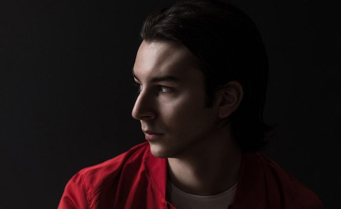

Metronome #123: Marcus Santoro


Insomniac’s Metronome series features mixes from some of today’s fastest-rising electronic stars, as well as championed legends. It takes listeners deep across a wide range of genres, movements, cultures, producers, artists and sounds that make up the diverse world of electronic music.
Young Melbourne producer Marcus Santoro can be understood in every sense as a “rising star” of the trance scene, a fact witnessed by increasing attention from the likes of Above & Beyond, who’ve been religiously spinning his recent productions on their Group Therapy radio show.
Having established a strong relationship with the formidable Enhanced stable, who have hosted a steady stream of his progressive trance stormers over the past year, it’s actually the result of nearly a decade spent by Santoro honing his razor-sharp studio skills.
Santoro’s calling card is his incredible electro basslines, channeling enough power to raise the roof on a stadium, which he conversely balances out with euphoric trance melodies that are built perfectly for peak time. It’s an approach that is showcased perfectly on his most recent single for the Enhanced Progressive label, “Flashpoint.”
We caught up with Santoro to find out more about what he’s got cooking.
How is your year playing out?
The year has been rather huge on the music front at the moment. I ended 2016 with quite a few releases under my belt for my transition into the trance world, and so far it’s been amazing. There have been lots of positive reactions this year, and I’ve happened to do some pretty awesome things!
You’re a fairly fresh name to the dance music world, though you’ve made an impressive impact with your productions over the past few years. Tell us about your journey so far.
Where do I begin? It’s been quite the journey, as I’ve gone through some drastic changes with my sound, but I’m super excited about it. I gained lots of support from superheavyweights like Martin Garrix, Tiësto and Hardwell. I’ve had the pleasure of releasing on labels in the past such as Armada, Revealed Recordings, Ultra, and Warner, and I was signed to Sony Music here in Australia for a while! It’s been quite the roller coaster, but now I’ve got my mind set on a fresh new direction, and I couldn’t be happier.
You’re settling well into a style that’s a very driven, electro-charged take on the trance sound. How has your personal style developed over the years?
I grew up with trance and house as a kid, and prior to my current releases, I was writing more progressive/big-room tracks, always with a melody to follow. So, I felt it was only natural to ease into the progressive trance world in the way that I did. It wasn’t forced; rather, it was an organic transition, and it works great.
One thing that stands out in a big way is those basslines! How long does it take you to fashion one of those when you’re working in the studio?
To be honest, it’s not as hard as I thought! When it comes to production, I’m always up for a challenge, but I do like simple approaches to my records. I follow the “less is more” theory, and it seems to work for me. I like to layer sounds rather than create them from scratch, so for my basslines, it usually can have anything from four layers to eight! It really depends how it sounds to me. iZotope Trash2 is my little secret best friend when it comes to them!
Your recent releases have been with the Enhanced stable. How did you begin working with them, and what other labels will you be working with in the foreseeable future?
I started working with Enhanced toward the middle of 2016. I sent in a few demos (which at first were rejected), but the feedback was always very positive. I ended up writing my single “There Is Only You,” and I had sent it to Above & Beyond over at Anjunabeats. They ended up playing it three times in a row on their ABGT show, and then I released it with Enhanced a few weeks after. They’re a great team, and they really understand my vision. I’m also working with FSOE Excelsior, which is home to Aly & Fila, and there’s also a new one coming out on Myon’s label Ride Recordings and Armada very soon.
Has the increasing attention from Above & Beyond brought a lot of extra exposure?
It’s still quite surreal every time Above & Beyond plays one of my songs! I never thought in a million years they’d be supporting my music, because I never thought I’d end up writing trance. They were the first artists to play my new music, so it’s amazing that they’ve continued the support for me, to the point where I even did a guest mix for them! I think it’s helped me with exposure from the Anjunabeats family. They’re big fans of what I’m doing, and the ABGT fans get really excited now when they see my name on the show! It’s very cool, and still all so fresh.
You hail from Melbourne! I’m a Sydney boy myself. What’s it been like coming of age in the Australian trance scene?
It’s definitely not easy, but it’s been pleasant so far. I’ve been welcomed with open arms, from what I can see, and I absolutely love it. Australia will always be home to me, although it can be tough for upcoming artists to break through. As I said, I’m still so fresh in the trance community here. There’s more people who know me overseas than back home, as Melbourne is very much on the uplifting/psytrance side. But I’ve yet to encounter any negativity, and I hope it keeps on going!
Finally, what’s in store for the rest of the year? I hear a big gig at the Etihad Arena is in the cards.
You’ve heard correct! On September 30, I’ll be playing at Etihad Stadium, Australia’s biggest indoor arena, for the world’s largest Transmission Festival alongside Markus Schulz, Ferry Corsten, Aly & Fila, and many more. It’s easily the biggest thing I’ll be doing in my career yet, but I am so excited (and incredibly nervous). I’m also heading to Amsterdam for my first ADE experience. There will be lots of music still to come, and hopefully a summer tour in the cards back here in Australia!
Marcus Santoro “Interior Exterior”
Jason Ross ft. Lauren Ray “I Will Be There”
East & Atlas “Casablanca”
Late Night Alumni “Only for Tonight” (Fatum Signature Remix)
Mike Shiver “Calling on You” (Marcus Santoro Remix)
Filterheadz pres. Orange 3 “In Your Eyes” (Marcus Santoro Remode)
I Am Sam “Stars” (Marcus Santoro Remix)
Myon “Albion 2017” (Marcus Santoro Remix)
Zac Waters & Marcus Santoro “Space We Create” (FSOE Excelsior)
Tritonal + SJ ft. Emma Gatsby “Hung Up” (Marcus Santoro Remix)
Jason Ross & Seven Lions ft. Paul Meany “Higher Love”
Marcus Santoro “Flashpoint”
Armin van Buuren ft. Richard Beford “Love Never Came” (W&W vs. Armin van Buuren Remix)
t:
Follow Marcus Santoro on Facebook | Twitter | SoundCloud